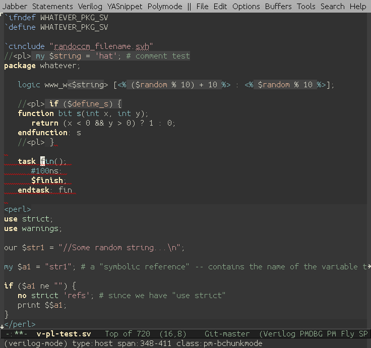

Major Modes Guidelines
In order for major modes to work well with polimodes major modes should abide the following rules:
- Don't assume that there is no narrowing in place. If you retrieve
text-properties or access a point in a buffer, make sure it's inside the
accessible region of the buffer. Pay special attention to what happens at
point-max. - Use
syntax-ppssinstead ofparse-partial-sexp. - If your mode uses or defines some notion of a span or chunk, follow Emacs convention for text properties and consider spans as [left closed and right open) intervals.
API
All API classes and methods are named with pm- prefix.
Buffer local objects:
pm/polymodepm/chunkmode[!! don't rely on this one. Likely to change !!]
Generics:
pm-initializepm-get-buffer-createpm-select-bufferpm-get-spanpm-indent-linepm-get-adjust-face
Utilities:
-
Spans:
pm-innermost-spanpm-map-over-spanspm-narrow-to-span
-
Buffers
pm-set-bufferpm-switch-to-buffer
-
Others
pm-fun-matcher
Initialization of polymodes
TODO
Poly Lock
TODO
Debugging Polymodes
You can visually inspect if the polymode does what you intended by activating
globalized pm-debug minor mode with M-x pm-debug-mode. When
pm-debug-mode is active the current span will be highlighted.

Some useful commands defined in pm-debug-mode-map:
| Shortcut | Description |
|---|---|
| M-n M-f | Toggle font-locking (pm-debug-toggle-fontification) |
| M-n M-h | Map through all spans and briefly blink each span (pm-debug-map-over-spans-and-highlight) |
| M-n M-i | Highlight current span and display more info (pm-debug-info-on-span) |
| M-n M-p | Print values of relevant variables in current buffer (pm-debug-relevant-variables) |
| M-n M-t i | Toggle info messages (pm-debug-toogle-info-message) |
| M-n M-t f | Toggle whether font-lock should be performed (pm-debug-toggle-fontification) |
| M-n M-t p | Toggle post-command hook (pm-debug-toggle-post-command) |
| M-n M-t c | Toggle after-change hook (pm-debug-toggle-after-change) |
| M-n M-t a | Toggle all (pm-debug-toggle-all) |
| M-n M-t t | Toggle tracing (pm-toggle-tracing) |
| M-n M-t v | Toggle verbose messages from polymode (pm-debug-toggle-verbose) |
| M-n M-f s | Fontify current span (useful for font-lock debugging when font-lock is off) (pm-debug-fontify-current-span) |
| M-n M-f b | Fontify current buffer (pm-debug-fontify-current-buffer) |
pm-toggle-tracing and pm-trace are particularly useful to debug syntax and font-lock calls.